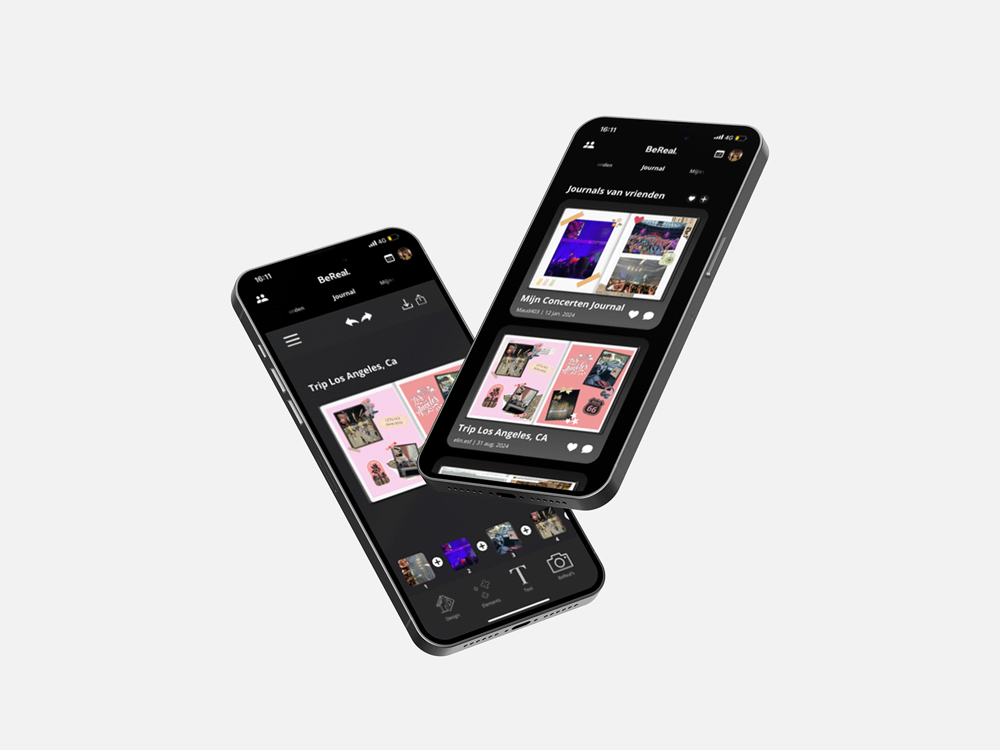

In blok 3 van mijn studie heb ik me verder verdiept in de vakken Inleiding Programmeren, Informatiearchitectuur en Maatschappij en Interactie. Deze vakken boden een nieuwe reeks uitdagingen en leerervaringen.
Inleiding Programmeren

Tijdens het vak Inleiding Programmeren heb ik kennisgemaakt met de talen HTML, CSS en JavaScript. De opdracht was om een game te maken, en ik besloot een uitdagend project aan te gaan: een cupcakemaker genaamd CupcakeCraft. Deze opdracht stelde me in staat om mijn programmeervaardigheden toe te passen en verder te ontwikkelen in een creatieve context.
Informatie Architectuur
Informatiearchitectuur bestond uit een teamgedeelte en een individueel gedeelte. In het teamgedeelte onderzochten we voorbeelden van websites, apps en andere digitale toepassingen die aansloten bij de theorie van die week. Dit deden we met behulp van een boek en het internet. Voor het individuele deel werkte ik een case uit waarbij ik een flowchart, journeymap, sitemap en wireframes moest opleveren. Deze aanpak hielp me niet alleen om theoretische kennis toe te passen, maar ook om praktische vaardigheden in informatiearchitectuur te ontwikkelen.

Maatschappij & Interactie
Bij het vak Maatschappij en Interactie heb ik samen met een medestudent onderzoek gedaan naar de app BeReal. We onderzochten de app met behulp van verschillende ontwerpprincipes en maatschappelijke perspectieven. Op basis van onze bevindingen hebben we een herontwerp van de app gemaakt met een productbiografie om deze beter aan te laten sluiten op de behoeften en wensen van gebruikers.



Blok 3 was een leerzame ervaring waarin ik veel nieuwe vaardigheden heb opgedaan, zoals het maken van games, sitemaps, flowcharts en wireframes. Ondanks dat ik dit blok niet het leukste vond, heb ik veel geleerd en goede resultaten behaald. Mijn cijfers weerspiegelen dit: een 9 voor Informatiearchitectuur, een 7 voor Inleiding Programmeren en een 7 voor Maatschappij & Interactie. Deze prestaties laten zien dat ik de stof goed heb begrepen en succesvol heb toegepast.